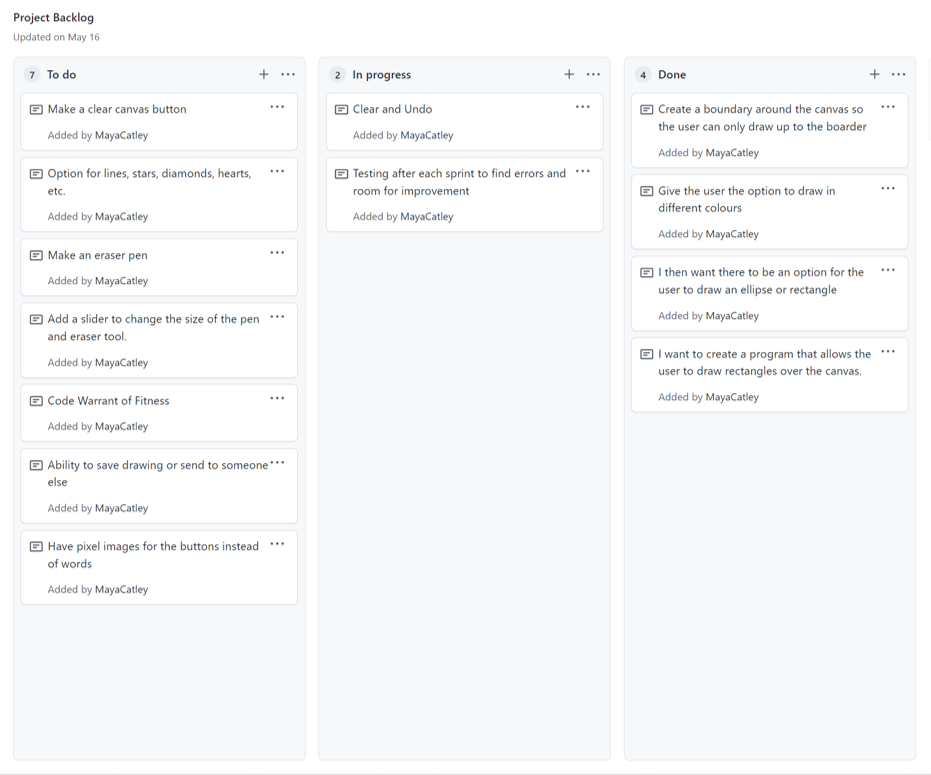
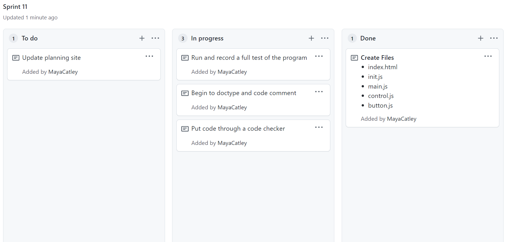

Project Plan

Initial Project Backlog
Sprint One
The aim of this sprint is for the user to draw any size of rectangle.
Program Sketch
Rough Program Plan
File Plan
Sprint One Board in progress

Basic Test of Program
Error
I recognised that my canvas' boundaries didn't allow the user to touch the drawing guide with the canvas boarder, and that the user wasn't able to continue drawing the shape if the boarder has already been touched. Preferably I would like the guide to disappear when touching the boarder of the canvas, or allow the user to continue drawing a shape elsewhere in one movement. I will fix this in a future Sprint, as currently I would like to get more shape and colour options before fixing the smaller details.
Reflection
This Sprint works well and achieves what I was after. It works very simply by only allowing the user to draw a guide and rectangles.
However this allows me to improve my program in future sprints, and has given me a variety of options for where I can improve my program. Through my testing I was able to recognise that there were lots of errors with my program as I mentioned above, such as the boarder of my canvas which will have to be fixed in a later sprint.
I would like to work on adding buttons and another shape in Sprint 2, as that will make my program more like a drawing program, by giving the user more options and more artistic freedom.
Sprint Two
The aim of Sprint Two is to allow the user to select either the ellipse or rectangle button, and then draw the shape accordingly.
Rough Program Plan
Sprint Two Board in progress

Basic Test of Program
Error
I struggled with the buttons creating different shapes, I realised this is because I was calling the shapes with capital letters, when I initially had them defined with lower case letters. This was a hard to find error, but super simple when I recognised what the problem was. I also had a few unnecessary lines of code that I was able to remove, this allowed me to find the error more efficiently.
Reflection
Sprint 2 was a big success, and I was able to get the basis for a good drawing program. Now the user is given choices and options, allowing for more creativity and freedom. This is crucial for a drawing program, so I prioritised including this feature over my other ideas on my kanban. I came across a few problems, however, the main one was actually getting the functionality to work, I had no trouble with the drawing guides, however it was difficult to have a button create a different shape. This was a simple fix, and showed me the importance of making sure I was properly calling parts of my code.
In my next sprint I really want to establish a way for the user to change the colour of shapes, to do this I want to have a swatch of variety of colours for the user to select, however, to simplify this, I may initially make only a few colour options to start.
Sprint Three
The aim of Sprint Three is to add a colour palate that the user can interact with to change the colour of the selected shape.
Rough Program Plan
Sprint Three Board in progress

Basic Test of Program
Error
I came across a few errors in this sprint which are shown in the videos bellow.
For this error, the first default colour was unable to be changed. This was a result of me setting it so that the first colour selected, became the standard colour until the program re-set. While this was a challenging error to identify, it was a simple process to fix, as I just had to have the program updating more.
For this error, I recognised that my colour swatch had a hover colour and then a different colour when selected, and both of these colours were different to the initial colour which made it very confusing. I realised this was because I copied the code including the colours of my shape buttons for my swatch buttons, so they functioned the same way. This however, was not good for the usability of my program as it was sending the user mixed signals as to what the colour they actually chose.
Reflection
Sprint 3 works very well, and operates how I had intended. Now the colours work perfectly after a problem with the first colour selected being unable to be changed. This sprint is fully functionable, however, is not very interesting as the functionality is very basic, and while it works, the user dosen't have much and many options.
For my next sprint, I am looking to create a drawing area within the canvas space. This will ensure the program not only has the appearance of a drawing program, but will all increase the usability factor. This is because it will allow the user to recognise where they can draw, and where the tools and options are. I can see the boundaries being a big possible issue, so i will have to take that into account when constructing the next sprint.
Sprint Four
The aim of Sprint Four was to create a drawing area inside of the canvas and have boundaries that allow the user to draw up to the edge of the drawing area.
Rough Program Plan
Sprint Four Board in progress

Basic Test of Program
Error
I came across an error where the left side of my canvas had working boundaries, however, the right side did not. I realised this was because I had the program checking for the mouse in the wrong boundaries.
if(xMouse > x && yMouse < x+w && yMouse > y && yMouse < y+h)
Initially this is the line of code where I couldn't seem to have all the boundaries working.
if(xMouse > x && xMouse < x+w && yMouse > y && yMouse < y+h)
I realised that I needed to change it to this, which resulted in the boundaries working. I was able to understand that I had referenced yMouse twice and not xMouse which hadn't allowed for all sides to be checked.
Sprint Four Testing
I decided to create a separate testing folder for adding the drawing area, as I wanted to test the functionality without all of my additional buttons and shapes. This was beneficial as I had a much simpler code to use as a base, and allowed me to find and fix errors more efficiently. To do this I copied the code from my first sprint and added the drawing area code onto it, once it worked, I then added the new code onto my actual sprint.
Sprint Review
This sprint was difficult but ended up working well once I figured out the boundary issue. Now the program not only looks more functional, but it is much easier to use as well. This sprint allows the options and drawing area to be seperated allowing for a more simple user experience, hopefully, this has prevented further issues with shapes being able to be drawn behind the option buttons.
Currently, the grid only allows for the user to draw up until the border, although later I could like the grid to disapear if the user drags it off the drawing area. I think this would make it clear that the user was out of bounds and would let them know to keep the shapes within the drawing area. Furthermore, this would prevent any issues with shapes being cut off. This change is not a crutial one though, so I will only make the change if I am able in one of my final sprints.
Sprint Five
This aim of Sprint Five is to allow the user to undo or redo previous shapes they may have drawn. This will give the user more freedom and allow them to make mistakes and still be able to recover their drawing.
Rough Program Plan
Sprint Five Board in progress

Basic Test of Program
Reflection
While I was considering creating a redo button as well, I decided to stick to my plan and just make the undo and clear buttons. I am hoping to try and create a redo button in the future, however, I realised this was too ambitious for sprint 5. A redo button would mean duplicating my shape list, so I would have to be able to go through the history on one list and have the other list actually representing what is on the canvas. I decided instead to make a clear button as the code was not too different to the undo button and because a clear option would be more helpful for users.
This was another decision in which I had to decide between two options to determine what would work best for my program. Where inevitably I had to consider practicality from not only the users perspective but also what I could manage in Sprint 5.
Sprint 5 went pretty smoothly, and I didn't face many problems. In my next sprint I am looking to add more shapes and colours to give the user more creative freedom.
Sprint Six
The aim of Sprint Six is to give the user more shape and colour options, such as a triangle, circle and skin tones.
Rough Program Plan
Sprint Six Board in progress
Basic Test of Program
Reflection
Sprint 6 was a super easy one, and I didn't come across any issues which allowed for very quick improvements. Adding more colours was just a matter of following the same process as before (adding more swatch buttons), and the circle shape was also an easy addition. I just had to make a few changes to my ellipse option to ensure the width and height the user chose was equal to the opposite dimention. The triangle was also an easy addition as I already knew the formula and just had to change the variable of a rectangle to create the point.
For my next sprint I am looking to make similar changes as I did to this sprint, by adding more shapes. I am also considering changing the format of how the colours appear on my program and in my code, and hopefully clean it up a bit.
This is a picture I was able to create with the current functionality.
Sprint Seven
The aim of Sprint Seven is to give the user more shape options such as a star and line, as well as changing the way the user selects a colour.
Rough Program Plan
Sprint Seven Board in progress
Basic Test of Program
Reflection
I made the choice in this sprint to change the way the colours appeared, prior they went transparent when hovered over or selected, which could give the user the wrong idea of what colour they were picking. This is why I decided to make them not only larger but have the stroke change instead, so the colour remained the same. This almost meant I could add transparent colours as an option.
Along with changing the appearance of the colours, I also changed the appearance of the program, I made it so the colours are on the far left side along with the buttons being in a line going downwards. This looks neater and also makes sense logically as we read from the left to the right.
The picture below shows what my program looks like now vs how it looked prior.

This sprint primarily went very smoothly, and again, I didn't have any issues. I debated removing the grid for the line, however, I realised that this made it difficult to determine the length and position of the line, so I decided to keep the grid on.
Sprint Eight
The aim of Sprint Eight is to give the user more shape options, such as a diamond and heart.
Rough Program Plan
(This is not the original plan I made for the heart, but rather is the correct code I implemented in a later sprint)
Sprint Eight Board in progress
Basic Test of Program
Error
I tried multiple attempts at coding the heart shape. The attempt on the left dosen't allow me to move the heart, as shown in the sprint 8 video, and the attempt on the right created too big hearts that don't respond to the users mouse clicks (as shown bellow).
I think the second attempt is much more likely to work, so I will try and adapt it for the following sprint so the heart functions like the rest of the shapes.
Reflection
I started this sprint off by removing the background grid, which was something in hindsight that I should have done much sooner, as it didn't serve much of a purpose once I added the drawing area. I considered changing my programs appearance so that the grid was on the drawing area, but I didn't see how this would improve the program. I thought that it may be distracting and take away from the users final drawing. Perhaps I could enable the user to toggle the grid on and off, although this is very low on my current list of things to add.
As mentioned earlier, the heart was my primary problem in this sprint, and I will defiantly have to think of adapting my initial plan to ensure the heart works. I think the issue is the sizing, so maybe if I set an initial form of scale, I will be able to make sure the heart functions properly. The diamond was pretty simple to add to my program, which was helpful as I struggled with the heart.
For the next sprint I would really like to have a redo button, as while challenging I think it will add a lot to my program. I would also like to try and create a pen and eraser tool. I'm expecting this sprint to be a difficult one, so it is critical that I do lots of testing to avoid creating too many errors in my actual program.
Sprint Nine
The aim of Sprint Nine is to have the option for the user to redo, have a pen and eraser tool, and fix the heart !!
Rough Program Plan
Sprint Nine Board in progress

Basic Test of Program
Sprint Nine Testing
I decided to create a separate testing folder for adding the drawing area, as I wanted to test the functionality without all of my additional buttons and shapes. This was beneficial as I had a much simpler code to use as a base, and allowed me to find and fix errors more efficiently. To do this I copied the code from my first sprint and added the drawing area code onto it, once it worked, I then added the new code onto my actual sprint.
Reflection
This sprint was a challenging one, and in hindsight I should have split this into two seperate sprints, as it was a lot to add at once. However, after lots of trial and error I managed to create a pen tool I was really happy with. I achieved this pen tool, by keeping track of the mouses initial position, and then drawing a line from the previous mouse position to current mouse position. By making the event true when the mouse was down, and false when the mouse was up, I was able to create the pen tool.
Similarly, I just decided to make the eraser a white pen. Whilst I can recognise there would have been better ways to go about this, it enabled me to use my pen functionality and only change one element; the colour. My logic was, that this would make it easy for the user to undo what they erased, as it was just removing a layer of white, rather than adding back various layers. Perhaps later, I could brainstorm some ways to make an eraser, but I'm happy with this alternative and don't see the need to change it.
I also managed to fix the heart (using the code written in the sprint before) which was a big success and was a result of me setting certain variables like the curve height too high.
Sprint Ten
The aim of Sprint Ten is to fix any errors in the previous sprint, and have a way of changing the thickness of the pen and eraser.
Rough Program Plan
Sprint Ten Board in progress

I first had to decide on how I wanted the user to change the thickness of the pen and eraser that was doable on HTML, and I came up with a few ideas.
Out of all the options I decided to go for the slider bar, as I thought it was the most minimal and foolproof option, it would also be easy to change and make the maximum value bigger if needed which is good for future proofing.
I then had to make a decision about how I wanted the slider to appear on the canvas. I wanted this slider to be used for both the pen and eraser, so I had to think of a way the user could recognise its purpose.
I decided to choose the option on the right as it felt less cramped and made sense aesthetically. It did however mean that the buttons would be smaller than the others, although I ended up preferring them this way as it showed the different between the MouseDown shapes and then MouseUp drawing options.
Basic Test of Program
Reflection
This sprint involved a lot of planning but ended up being very sucessful, I first had to pick the format of my slider bar. I decided to pick the one that made the program less cramped and made scene with the buttons position. Then I had to do some research on how to insert a slider bar onto HTML canvas. I found the best way to achieve this was to call it on the HTML portion of the program. This caused a few errors however, due to the javascript being 'in front' of the HTML, I struggled getting the slider to appear on top of the javascript. To fix this issue I had to supply a variable for the z-index. This meant I could pull the slider in front of the java by using the z axis. However, this created another issue! When the programs page was resized, the slider would lose its position, as the slider was placed through percentages, and the canvas elements were called through pixels (as shown above). To fix this re-sizing issue, I added "wrapper" div to hold the whole program in place. This means that regardless of how big or small the page is, the canvas won't re-size and change position.
In my next sprint I aim to start doctyping my code and find any possible errors that need fixing.
Sprint Eleven
The aim of Sprint Eleven is to fix all errors and doctype my program.
Sprint Eleven Board in progress
Basic Test of Program
Reflection
I concluded this sprint on an error, as I realised that my pen and eraser tool were not compatable with my redo button. This is super problematic, as the entire program stops functioning. I decided to try and fix this issue in my final sprint, as I didn't want to break any of the other functionality that is actually working. Therefore, any of the changes I make in the next sprint can be reversed if I was to create a bigger error. I have a few ideas on how to fix this issue, but the one that I am leaning towards implimenting the most, is having various pen groups.
I did however make progress with clearing up some code that wasn't being used as well as starting to comment my code. While this sprint wasn't the most efficient one, I have a good plan for sprint 12, and am happy that the project is near completion.
Sprint Twelve
The aim of Sprint Twelve is to fix the redo error and test the program.
Rough Program Plan
Sprint Twelve Board in progress

Basic Test of Program
Reflection
I decided to put my program to the test and try to recreate Stary Night, and I think it turned out pretty sucessful !!
I also managed to fix the error in the previous sprints with the redo button. This was a tricky process however I think my solution ended up being very effective. I decided to allocate pen groups a random unique ID ranging up to a million, so that mouse down to mouse up is grouped under the same random ID (this applies for both the pen and eraser). This means that when undo and redo is called, it will remove or add all elements with the same ID from the set. This works very well, and I think it was a great solution.
What my Project Backlog looks like now
Through using Kanban project management, I was able to complete my Sprints efficiency and monitor my progress, through this agile process. Reflecting on my initial goals, I feel as though I managed a lot more additions that I thought. For example, I considered the slider bar and redo option to be very unrealistic, but am very pleased I managed to add them to my program. The only remaining goals are ideas that while interesting, don't necessarily add to the functionality of the program and therefore were not my main priorities.
Pushing to Git
I pushed my sprints in groups to Git, which was extremely helpful to ensure my code was backed up especially as towards the end of the project, I had to completely reset my computer.
Relevant Implications Summary
Usability
Usability makes sure that the user always knew what was going on.
It was crucial that my program was easy to use and that any possible errors the user may come across were minimised, especially considering the programs only function is to be interactive. I achieved this in various different ways, for example, when the user hovers of a shape button, the buttons transparency changes, and when selected the button turns black. This is a really important addition to my program as the user can determine what elements they can interact with, and what element is selected. I did a similar method with my colour buttons as well, except I decided to have the stroke change rather than the colour. Initially I had the colour change to a more transparent version of the colour, however, I realised that this may be confusing for the user and it may be hard to determine the actual colour selected. It works much better having the stroke get thicker, as it is still obvious when hovering or selecting, and dosn’t interfere with the actual colour.
Another way I achieved this was creating a separate and simple layout, with the options panel and the drawing area divided into two obvious areas. I made it so the option buttons were on the left as we read left to right so the user would recognise the choices first. I then made it so the drawing area was white as opposed to the purple background, to ensure the user could recognise where they could draw. To help the user further I created a drawing guide showing the space the shape was going to take up, and where the shape would be located on the canvas. I decided to keep the drawing guide the same for all shapes apart from the pen, as I liked the continuity, and didn’t want to change too much as to not overwhelm the user.
Lastly, my slider bar was a big factor for improving the usability of my program. By enabling the bar to dictate the thickness of the pen and eraser, the user has lots more freedom. I additionaly arranged it so that the slider was below the pen and eraser so that it was obvious the slider changed both options. Similarly, the undo, redo and clear are all in a row to show the user that they have similar functionality.
Throughout this project I had friends and family members use the program without any instructions or explanation to fully determine how user-friendly it really was, an example of this is when my friend Char tested my program during sprint 7. Seeing someone else use my program enabled me to see what worked and what didn't.
Functionality
Functionality was crucial when making sure that my program worked well and that it had no bugs and wouldn't crash.
To do this I had to ensure that my program worked properly, whether this was making sure the boundaries worked on that the shape and colour selected was the one to appear when drawn. This means that I had to regularly and systematically test my program after each Sprint.
It was so important to test my code regularly and fix errors as they happened, as it would have been so much more difficult to try and fix multiple errors at the same time. Another way in which I dealt with errors was by putting my code through a code checker. Additionally, I also found it valuable to implement big changes in a testing sprint on a smaller scale (such as the drawing area and pen tool). This was valuable because I could ensure the functionality worked before adding it to the remainder of the code. This produced fewer errors and alleviated possible crashes.
Furthermore, I tested my program on Microsoft Edge, which was extremely successful as it functioned the exact same way as on Google Chrome. The only difference was that the slider turned to grey scale, however, this is unimportant and dosn't change the functionality in anyway.
Future Proofing
Future Proofing was essential to ensure that my program would not only function properly now but in the future too.
To do this, I made sure that my program was easy to update. I achieved this by making sure it was easy to add new functionality and features. I addressed this by adding new shape options and elements frequently to ensure no errors would arise. This is why it was so crucial to creating the program by pushing my Sprints to Git to ensure that if an element happened to break a section of the program it was easy to go back to the previously working program. Currently, it is very easy for new shapes to be added, and simply the user would add the variables, update and draw function to the init file, add the shape to the mUp event in the control file, and then add the button to the main file.
I also had to ensure that my program would be easy for another developer to work on and improve. I achieved this by making sure that the majority of my code was commented on with helpful and descriptive sentences briefly explaining the purpose of functions and lines of code. I also included doctype in my code to document specific segments of my code; doctype consists of listing the classes, exceptions and functions and a one-line summary. As well as dividing my code into various files as this separates the elements and makes it easier to understand, be maintained and then be extended.